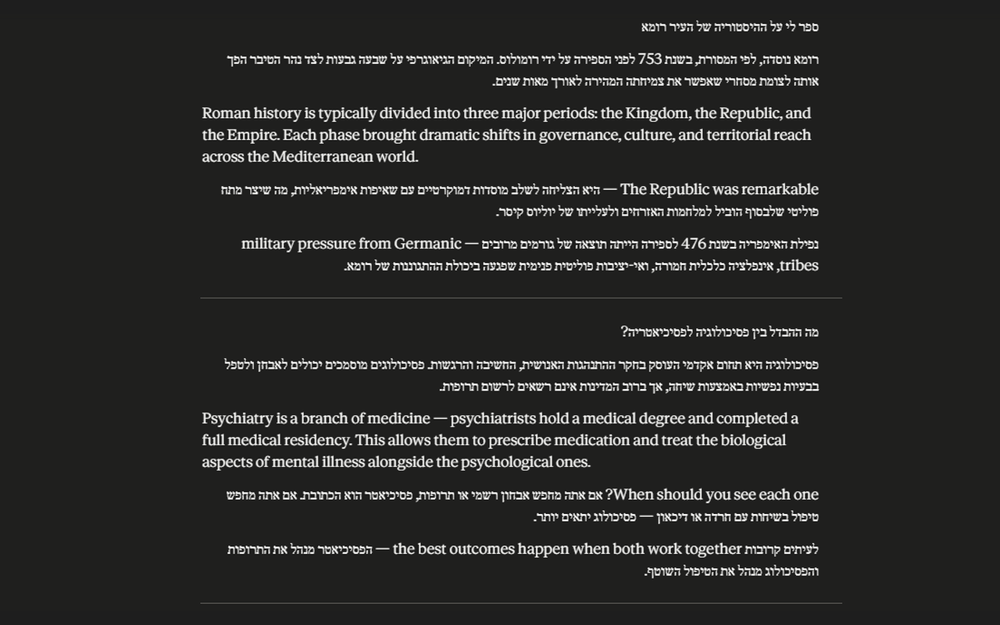

מה הבעיה?
באתר claude.ai אין תמיכה מובנית בכיוון כתיבה מימין לשמאל. כשכותבים או מקבלים תשובות בעברית, הטקסט מופיע בכיוון הלא נכון — משמאל לימין. קשה לקרוא, מבלבל, ופשוט לא נעים.
מה התוסף עושה?
- זיהוי לפי רוב תווים — אם רוב התווים בפסקה הם בעברית, היא תוצג מימין לשמאל, גם אם מתחילה באנגלית
- תמיכה דו-כיוונית (BiDi) — אנגלית בתוך פסקה עברית זורמת בצורה טבעית
- זיהוי פר-פסקה — כל פסקה, פריט ברשימה, כותרת או תא בטבלה מזוהים בנפרד
- תיבת הקלט — גם מה שאתם כותבים מוצג בכיוון הנכון
- אפס הרשאות — לא נדרשות הרשאות מיוחדות, לא נשלח מידע לשום מקום
צילום מסך

התקנה ידנית
- הורידו את הקוד מ-GitHub (Code → Download ZIP)
- פתחו את
chrome://extensions/בדפדפן - הפעילו מצב מפתח (Developer mode)
- לחצו על Load unpacked ובחרו את התיקייה
איך זה עובד?
התוסף מורכב מקובץ יחיד (content.js, כ-60 שורות) שמשתמש ב-MutationObserver כדי לעקוב אחרי שינויים ב-DOM. בכל פסקה חדשה הוא סופר תווים עבריים מול לטיניים ומגדיר את כיוון הכתיבה בהתאם. הביצועים מבוססים על requestAnimationFrame — כל השינויים נצברים ומיושמים בבת אחת.
תמיכה בפיתוח
התוסף חינמי לחלוטין. תמיכה מהקהילה עוזרת לי להמשיך לשפר ולתחזק אותו: